~ Places to Visit in Manali ~
Popular things to do
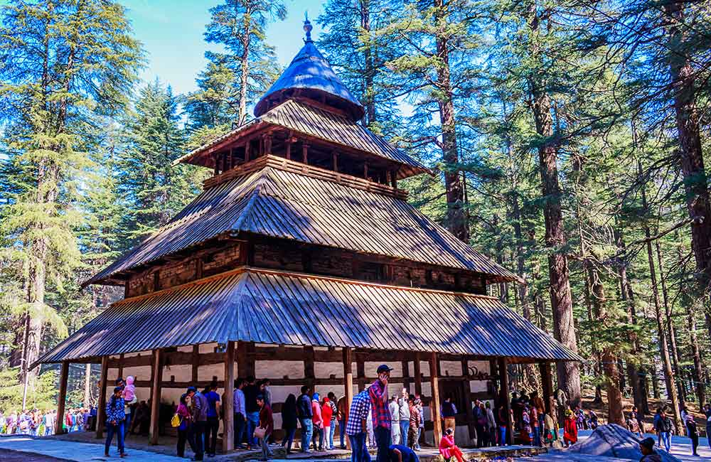
Cultural & Theme Tours
Top Attractions in Manali
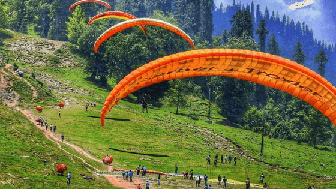
Solang Valley
Solang Valley is also called the
'Snow Valley', which is famous among
the tourists for its adventure
activities hosted there. Some
of the adventure sports like
skiing, trekking, mountaineering
and also paragliding.

Beas River
The Beas River marks the easternmost
border of Alexander the Great's
conquests in 326 BC. It was
one of the rivers which created
problems in Alexander's invasion
of India.
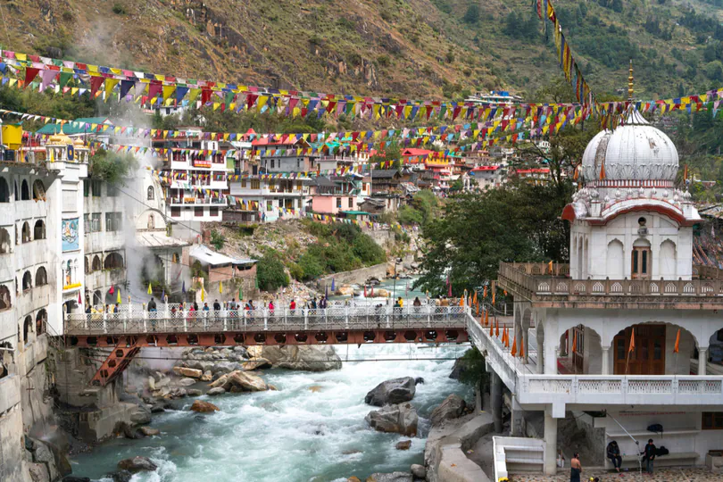
Manikaran Gurudwara
Manikaran is also an important religious
destination for Sikhs due to the presence
of the iconic Sri Guru Nanak Dev Ji Gurudwara.
Mentioned in the 12th Guru Khalsa, the
Gurudwara has three legendary hot springs
and can cure complex diseases .

Jogini Waterfall
Jogini waterfall height from sea level
is around 150 ft. Besides the apparent
natural beauty of the waterfall, the
place is of religious importance too.
The temple of the village goddess
Jogini Mata is located at the base
of the waterfall.
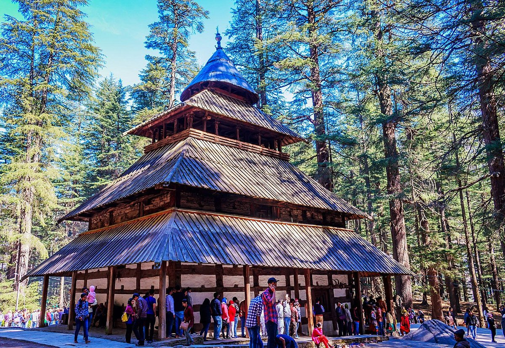
Hidimba Devi Temple
The Hidimba Devi temple was built in
1553 CE by Maharaja Bahadur Singh. The
temple is built around a cave where Devi
Hidimba performed meditation. Hidimbi
was supposed to have lived there with
her brother Hidimb, and not much is
known about their parents.
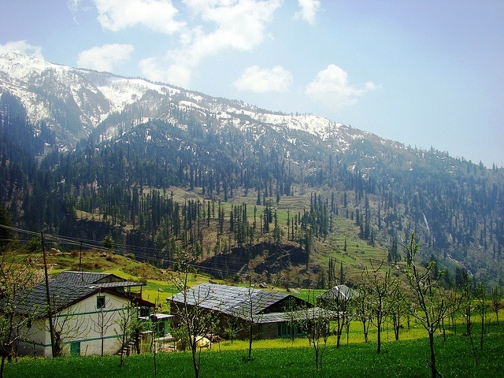
Gulaba
Off beat place to find snow!!
It is a good place to enjoy snow and
other activities if you are in Manali
before Rohtang Pass opens.
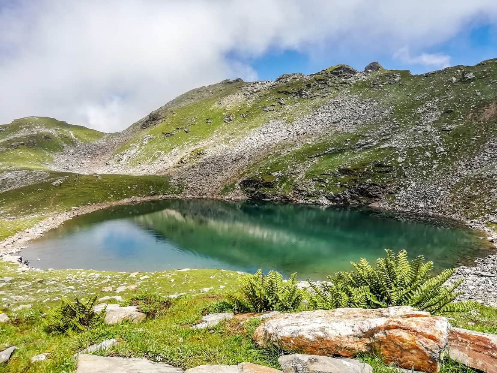
Bhrigu Lake
Legend has it that the sage used to
meditate near the lake and hence it
has been rendered sacred; the locals
believe that due to this the lake never
freezes completely. This lake is held
sacred to the sage, Rishi Brighu,
a great saint of Indian history.
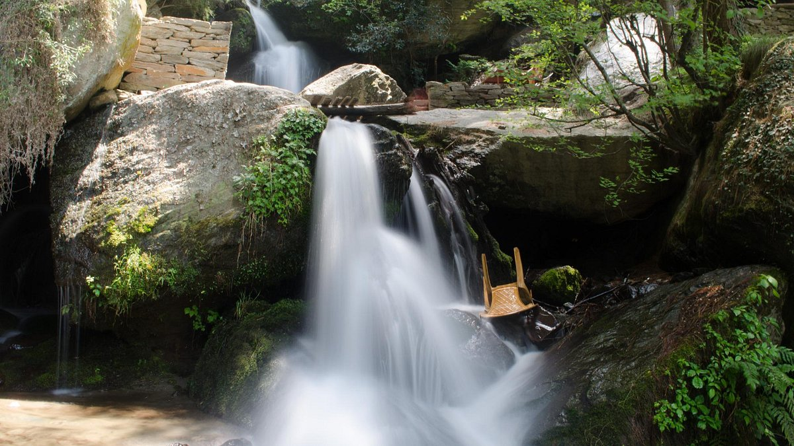
Jana Waterfall
Jogini waterfall height from sea level is
around 150 ft. Besides the apparent natural
beauty of the waterfall, the place is of
religious importance too. The temple of
the village goddess Jogini Mata is located
at the base of the waterfall.
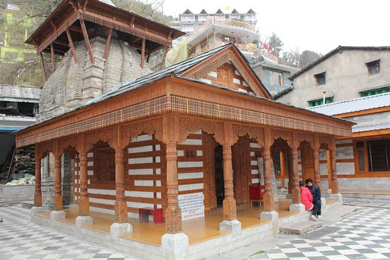
Vashisht Baths
Vashist Temple in Manali is dedicated to sage Vashisht,
the Kula guru of Lord Rama in the village Vashisht
across the River Beas. It is one of the most famous
places to visit in Manali. Locals and tourists love to
visit this place which gives a tremendous view of
nature and provides inner satisfaction deep in the soul.
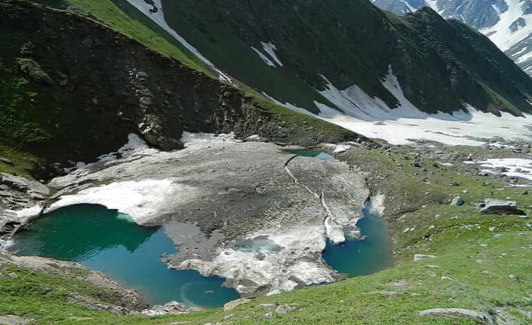
Beas Kund
It is famous summer trek for tourist who are visiting
Manali and do some adventure activity as well. Beas
Kund is situated in the Kullu Valley and the lake
is considered to be a sacred lake in Kullu. The
Beas Kund trek takes you to the origin of the
river Beas.
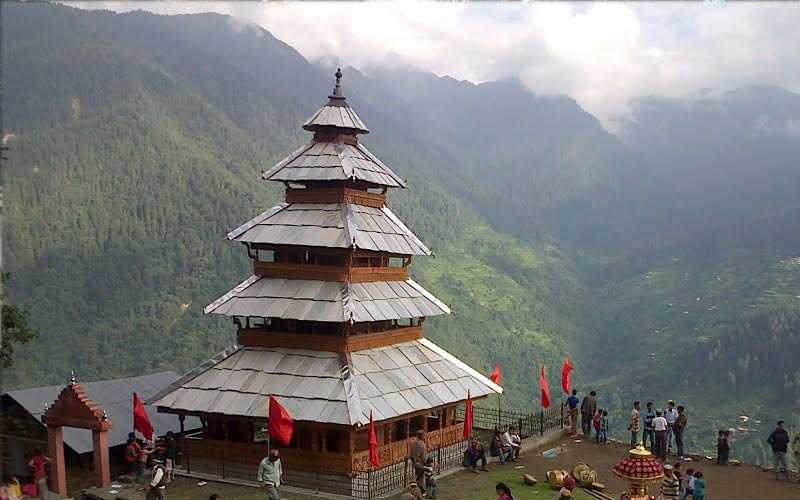
Manu Temple
The Manu Temple is said to be the only temple
dedicated to the King Manu, who was later
known as Sage Manu in India. In fact, some
legends rely heavily on the fact that the
present-day temple is the exact place where
sage Manu would meditate regularly.
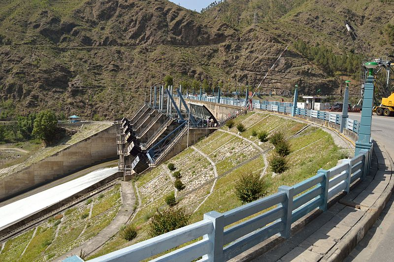
Pandoh Dam
The Pandoh Dam is an embankment dam on the Beas River
in Mandi district of Himachal Pradesh, India. Under
the Beas Project, the dam was completed in 1977 and
its primary purpose is hydroelectric power generation.
This pass is known for its scenic beauty and excellent
trekking trails in the Himalayan range.